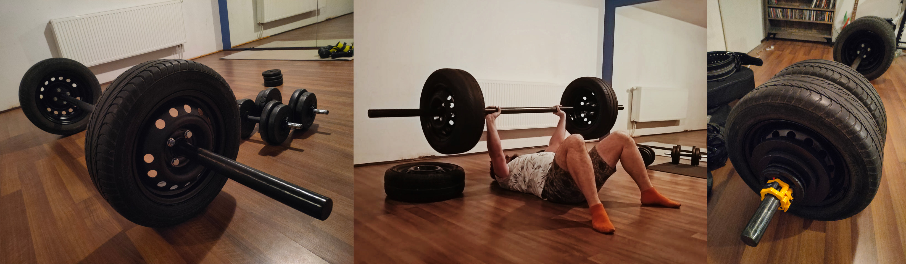

Since I moved to Warsaw the time to commute to a gym increased tenfold. The only viable solution, given that I had much more space than in my previous place, was to assemble a home gym. As the starting point, the most universal item was the barbell, so I made one.
The barbell was made out of 50mm full steel rod (which allows for using the standard olympic weights) with a flange welded on to match the tires. The length of the barbell is 250cm, and it weights about 70kg (with the tires). The tires are not removable and serve a dual purpose. They provide weight and a cushion for the barbell to fall safely on a wooden floor. The design of the barbell is to make it harder on the grip and the starting lift pose (the bar is further forward). The picture on the right shows a bar loaded to 135kg after adding some weights and another set of removable tires with additional flanges. The most for now I loaded and lifted on this beast is 170kg :) The next home gym improvements will be to add a weightlifting rack.